Para armar tu huerta necesitas pocas herramientas. Pala, laya y rastrillo son las básicas que vas a necesitar. A medida que tu huerta crece y vas aprendiendo, podrás ir sumando otras herramientas para facilitar las tareas.
Pala: Es necesaria para marcar el sector destinado al cultivo, cavar hoyos o cargar.
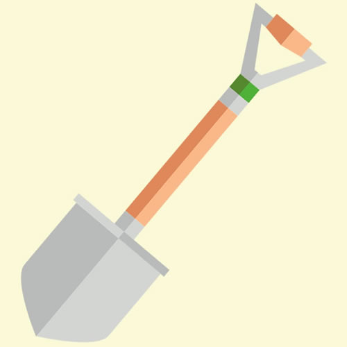Laya: Se usa para remover la tierra, aflojar las malezas y airear el suelo sin dañar el pan de tierra.
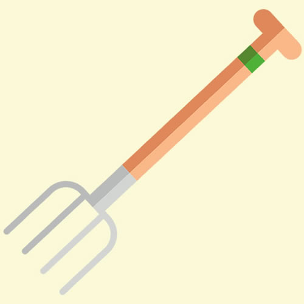Rastrillo: Se utiliza nivelar superficies, nivelar la tierra, amontonar malezas entre otras cosas.
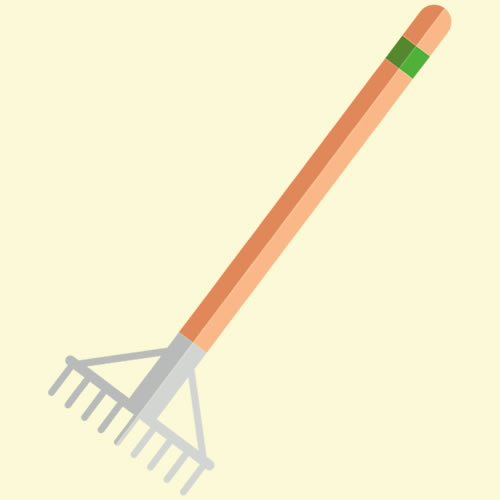Carretilla: Se usa para el transporte de materiales muy pesados dentro de la huerta.
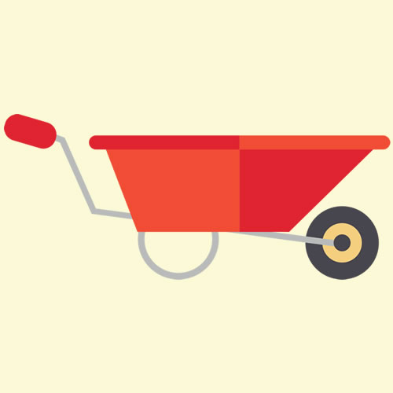Azada: Permite desmalezar caminos, nivelar superficies y airear en forma superficial el suelo.
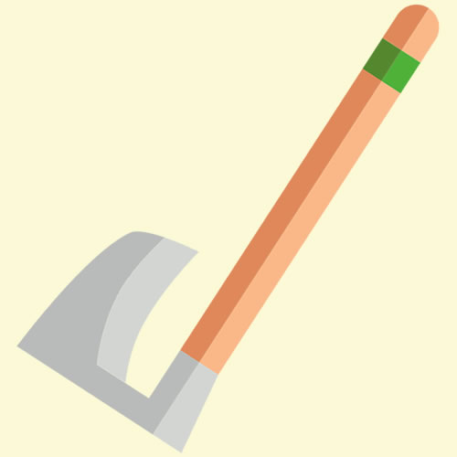Guantes: Se usan para proteger las manos.
Regadera o manguera: Son indispensables a la hora del riego.
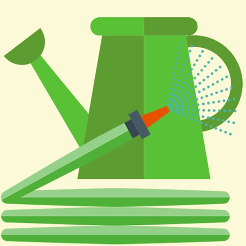Barrehojas: Su utiliza para juntar hojas.
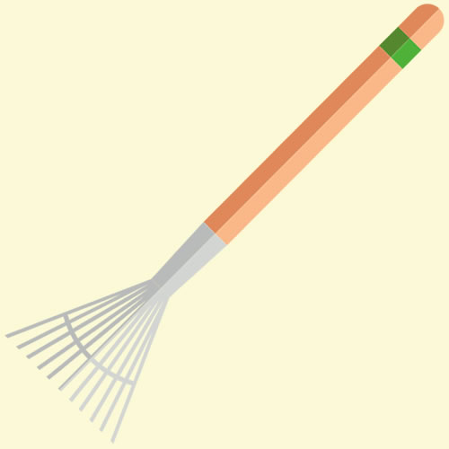Estas herramientas se destinan a tareas más delicadas.
Palita para trasplante: Se usa para hacer hoyos, preparar mezclas y permite trasladar el plantín desde el almácigo al cantero.
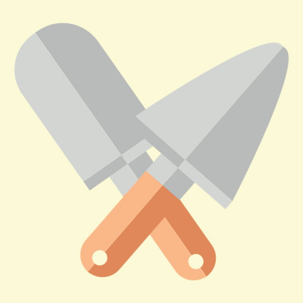Tijera de podar: Necesaria para todo tipo de corte. Mantener afilada, limpia y desinfectada para que el corte sea prolijo.
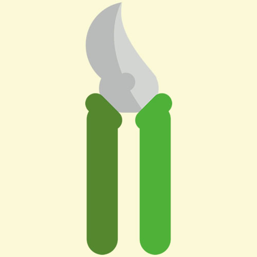Plantador: Se utiliza en la huerta para preparar el hoyo en el cantero.
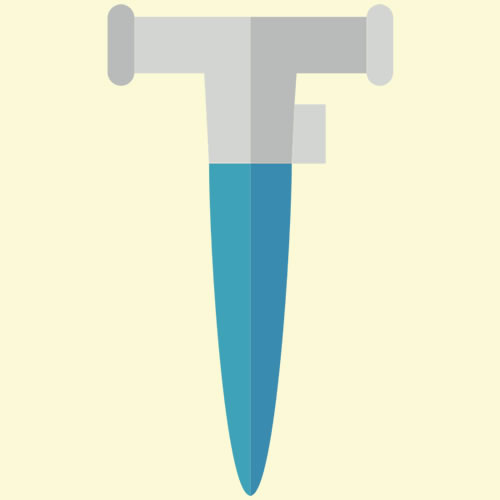Pulverizador: Es necesario para la aplicación de preparados naturales para el control de plagas y enfermedades.
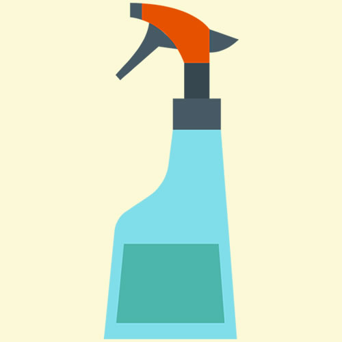Recordá que el mantenimiento y limpieza de las herramientas son indispensables para su durabilidad.